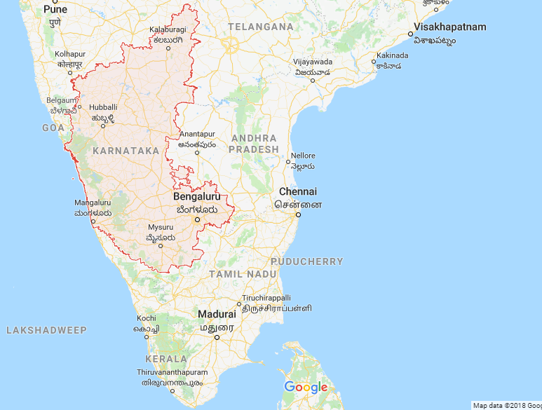

Karnataka is a state in the south western region of India. It was formed on 1 November 1956, with the passage of the States Reorganisation Act. Originally known as the State of Mysore, it was renamed Karnataka in 1973. Only a small part of the state corresponds to the Carnatic region. The capital and largest city is Bangalore (Bengaluru). Karnataka is bordered by the Arabian Sea to the west, Goa to the northwest, Maharashtra to the north, Telangana to the northeast, Andhra Pradesh to the east, Tamil Nadu to the southeast, and Kerala to the south. The state covers an area of 191,976 square kilometres (74,122 sq mi), or 5.83 percent of the total geographical area of India. It is the seventh largest Indian state by area. With 61,130,704 inhabitants at the 2011 census, Karnataka is the eighth largest state by population, comprising 30 districts. Kannada, one of the classical languages of India, is the most widely spoken and official language of the state alongside Konkani, Tulu, and Sanskrit. Karnataka also has the only 3 naturally Sanskrit-speaking districts in India. The two main river systems of the state are the Krishna and its tributaries, the Bhima, Ghataprabha, Vedavathi, Malaprabha, and Tungabhadra, in the north, and the Kaveri and its tributaries, the Hemavati, Shimsha, Arkavati, Lakshmana Thirtha and Kabini, in the south. Most of these rivers flow out of Karnataka eastward, reaching the sea at the Bay of Bengal. Though several etymologies have been suggested for the name Karnataka, the generally accepted one is that Karnataka is derived from the Kannada words karu and nādu, meaning "elevated land". Karu nadu may also be read as karu, meaning "black", and nadu, meaning "region", as a reference to the black cotton soil found in the Bayalu Seeme region of the state. The British used the word Carnatic, sometimes Karnatak, to describe both sides of peninsular India, south of the Krishna.[9] With an antiquity that dates to the paleolithic, Karnataka has been home to some of the most powerful empires of ancient and medieval India. The philosophers and musical bards patronised by these empires launched socio-religious and literary movements which have endured to the present day. Karnataka has contributed significantly to both forms of Indian classical music, the Carnatic and Hindustani traditions.
